Как читать авторский курс и нормативные материалы
Это учебные материалы, а не заключение о соответствии конкретного продукта. Организационные модели курса отделяйте от терминов стандарта: ППК в опубликованном проекте — машиночитаемый перечень, а живой реестр его версий является практикой сопровождения. Термин OSA в разных материалах имеет разный охват. Статус и обязательность нормативного документа проверяются отдельно; проект КАПО опубликован как проект первой редакции.
М10. Много исполнителей и корпоративная модель продукта
Зачем этот модуль
Корпоративный продукт Организации редко собирается одной командой. Это «изделие», в которое 5–10 соисполнителей вкладывают свои подсистемы поверх огромного legacy. SCA/OSA при этом превращается из «прогнать сканер по своему репозиторию» в задачу управления составом продукта, который ты сам не собираешь: SBOM приходит готовым, в ZIP-поставке, через артефакт-репозиторий, и качество этих данных контролирует не разработчик, а внешняя команда. Модуль учит организовать приём, оценить пригодность поставленного SBOM и однозначно ответить на вопрос «кто отвечает за состав».
Что внутри модуля
- 01 Конспект — контракт поставки, потоки артефактов, качество данных от внешних команд, распределение ответственности.
- 02 План занятия — тайминг занятия на 90 минут: лекция, демо приёмки, ПЗ.
- 03 Практическая работа — приёмочный контроль ZIP-поставки одного соисполнителя.
- 04 Контрольные вопросы — вопросы и кейсы по приёмке и ответственности.
- 05 Что проверять на проекте — чек-лист аудитора процесса много-исполнительской поставки.
Поток поставки (укрупнённо)

Ключевые понятия
Контракт поставки · ZIP-поставка · артефакт-репозиторий · приёмочный контроль SBOM · соглашение о качестве данных · владелец состава · provenance соисполнителя · merge SBOM в единый состав изделия.
Связи модуля
- Практики: П28. Поставка от нескольких исполнителей, П29. Readiness dashboard.
- Шаблоны: Контракт поставки SBOM от соисполнителя, Соглашение о качестве данных SBOM, Чек-лист ZIP поставки, Шаблон отчёта по соисполнителю.
- Смежные модули: М09. C/C++ legacy (откуда берётся «грязный» SBOM соисполнителя), М11. Корпоративный кейс: генератор фактов и сервис вердиктов (как принятые SBOM обрабатываются дальше).
- Нормативка: ГОСТ Р 56939-2024, Проект ГОСТ Р КАПО, ISO/IEC 27001 (supplier relationships), NIST SP 800-161.
Практический результат
Слушатель умеет: принять ZIP-поставку соисполнителя через артефакт-репозиторий, прогнать её через приёмочный контроль качества SBOM, зафиксировать дефекты данных как worklist (а не как «отказ»), и указать в RACI, кто отвечает за состав каждого фрагмента изделия.